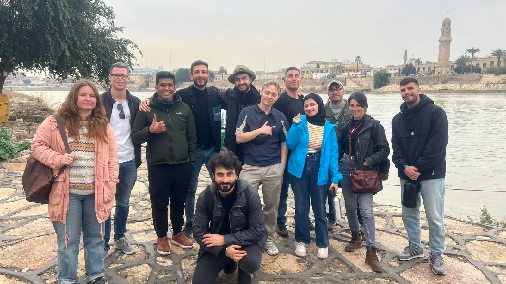
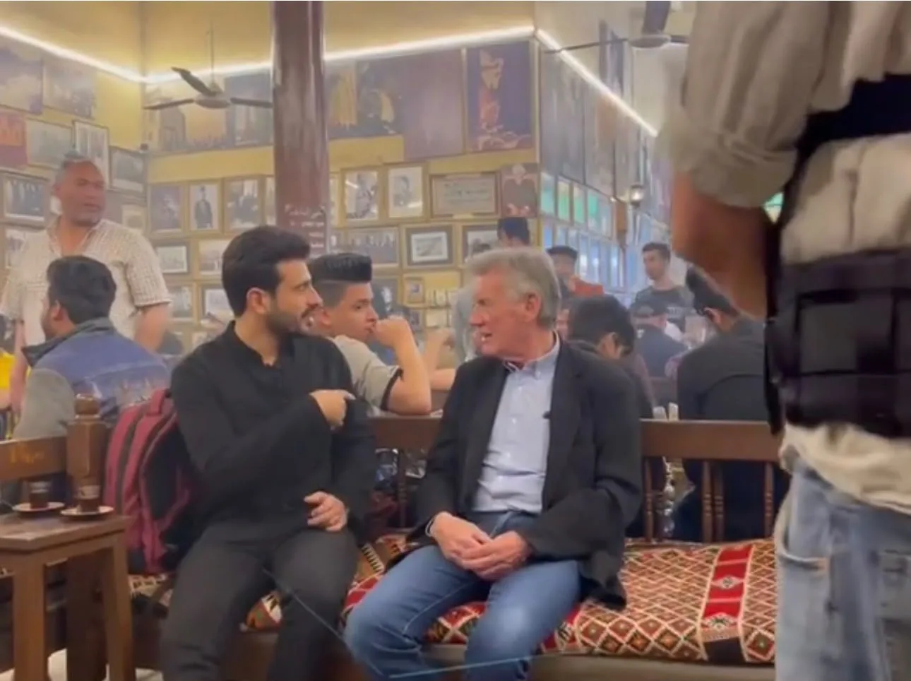
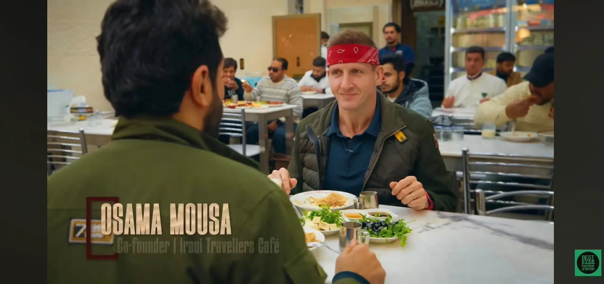
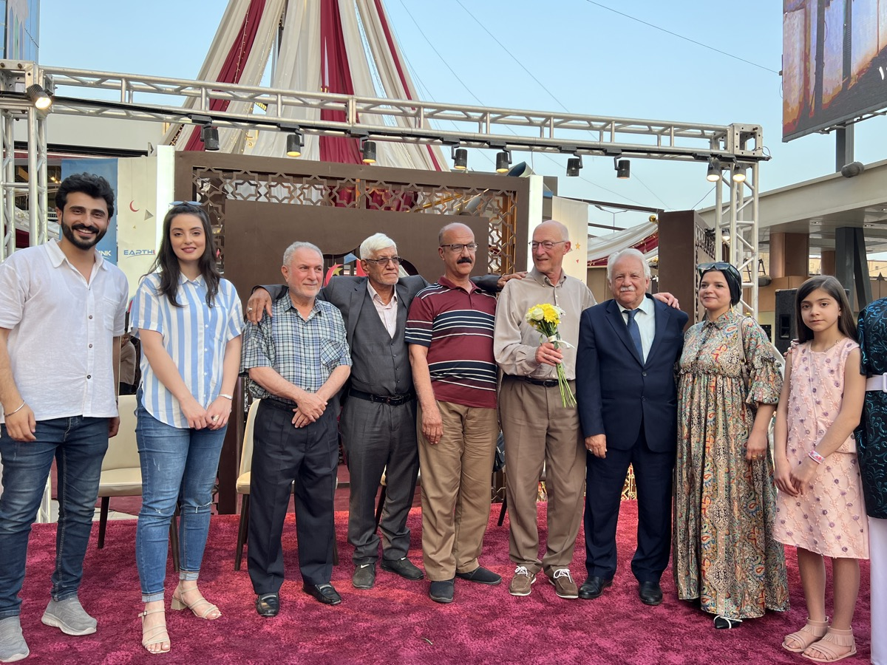

OSAMAH MOUSA
Media & Strategic Communications Specialist
Filmmaker · Cultural Storyteller · International Production Facilitator
Connecting Iraq with the world through stories, media and people.
Connecting people. Bridging cultures. Inspiring understanding.

Osamah Mousa connects people across cultures for a living — as a media and strategic communications specialist, filmmaker, content creator, and documentary production facilitator based between Iraq and the world.
Quick Facts
- Roles: Media & Strategic Communications Specialist, Filmmaker, Content Creator, Cross-Cultural Communication Specialist, Documentary Production Facilitator
- Founder: Co-Founder, Iraqi Travellers Cafe (since 2019)
- Filmmaking: Writer, Director & Producer — "A Reunion After 50 Years" (short documentary)
- Featured on: Best Ever Food Review Show, DW, TRT World, Alhurra, and regional Iraqi television
- Education: Master's degree, Biochemistry
Since 2019, his work through Iraqi Travellers Cafe has promoted intercultural dialogue, responsible tourism, and people-to-people diplomacy, connecting international visitors with local communities across Iraq. That same instinct for research and storytelling now runs through everything he does: producing documentary-style content on culture and heritage, writing and directing his own short film, and facilitating international productions as they capture authentic stories on the ground.
To connect people, bridge cultures, and inspire understanding through media, strategic communication, documentary storytelling, cultural research, and international collaboration — creating authentic stories that foster dialogue, challenge stereotypes, and strengthen connections between communities across the world.
Iraqi Travellers Cafe
The idea that started the journey — from a small community gathering in 2019 to one of Iraq's most recognized cultural exchange initiatives.
Co-founded in 2019, Iraqi Travellers Cafe (ITC) began as a community initiative and grew into a platform for intercultural dialogue, responsible tourism, and people-to-people diplomacy — connecting international visitors with local communities across Iraq.
What started with walking tours and informal gatherings expanded into cultural events, workshops, and international exchange programs, and eventually into media: documentary collaborations, television appearances, and press coverage that carried Iraq's story to a global audience.

Five disciplines, one thread
Each discipline supports the same central positioning: connecting Iraq with the world through stories, media and people.
Strategic Communications
Building Iraq's international image and communication bridges between global media teams and local communities.
Documentary & Film
Writing, directing and producing original documentary work, alongside facilitating international film productions on the ground.
Cultural Storytelling
Producing documentary-style content on culture, history and travel that transforms research into engaging multimedia narrative.
International Production
Cultural consultation, research, location support and logistical facilitation for international journalists, filmmakers and crews.
Community & Cultural Exchange
Leading Iraqi Travellers Cafe: intercultural dialogue, responsible tourism and international exchange since 2019.
Selected Work
Stories, productions and collaborations connecting Iraq with the world.

Michael Palin in Iraq
View project →
Best Ever Food Review Show
Watch the episode →
A Reunion After 50 Years
View project →
Baghdad Walking Tour
View project →Iraq → The World
Cultural exchange is not one-directional. Osamah's work creates connections between Iraqi communities, international visitors and audiences around the world.
Delhi, India
Co-organized a cultural exchange event promoting intercultural dialogue and global citizenship.
Berlin, Germany
Co-organized an international community event connecting participants from diverse cultures.
Houston, USA
Co-organized a cultural gathering strengthening ties between Iraqi and international communities.
In the press, on screen
Television, documentary and press coverage across international and Iraqi media.
Let's build something meaningful.
Whether you're producing a story in Iraq, exploring a cultural collaboration, developing a media project, or looking for someone who understands the space between local communities and international audiences, get in touch.